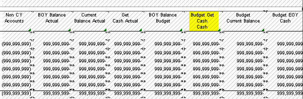

The purpose of this document is to demonstrate how to manipulate the output in writing Financial Report or Tabular Report
Answer 1> Add additional hidden columns without having 1000 scale and compute it based on this column then divide it by 1000 to represent in the report
Description Actual Value 1,000 Scale
------------- --------------- ---------------
Account 01 1,350.00 1
Account 02 3,453.00 3
Account 03 7,475.00 7
Account 04 11,267.00 11
--------------- --------------
Total 23,545.00 22
<Internal_Only>
Reference:
http://www.stewartdelavega.com/8ZrpOrqjV/
Excerpt:
Rounding before or after the calculation
A difficulty that must be avoided to rounding in financial statements is rounded before the calculations. If you redondeas figures in a sum, for example, when you add $1.4 million three times (in other words US$ 1.4 + US$ 1.4 + US$ 1.4), it rounds to the whole million closer (US$ 1.4 million to US$ 1 million) before the calculations, will result in $3 million, while the actual total is $4.2 million (obviously better rounded to $4 million). In this example, the rounded total, due to rounding before calculation, reduce $1 million and more of the actual total. This illustrates why the rounding should be done at the end of the calculations. Here, the relevant principle according to GAAP is "materiality" (full disclosure), an error of $1 million
is important and material to investors and to the public?
.
Or,
http://www.accountantforums.com/threads/question-about-rounding-numbers-in-financial-reports.6624/
</Internal_Only>
LDA Description Amount
------ ----------------------------- --------------
3 Account-LOD2
4 Account-LOD3
5 Account-LOD5
6 Account-LOD6 999.99
6 Account-LOD6 999.99
....
5 Account-LOD5 *** Hide this ***
4 Account-LOD4 *** Hide this ***
3 Account-LOD3 *** Hide this ***
Answer 2> Supposing that you are printing your custom report at the level of detail 6,
To hide LOD 5, 4 and 3 when you print LOD 6 level, try as below to hide Level Break Footer (sub-total and grand total),
If RV LDA is equal to 6
Suppress Section Write
End If
Answer 3>
"An Invalid Cell record was found for row xxxxx and will not be loaded."
: This message will be written when your Financial Row Report has hidden row(s). There are 4 financial rows which got hidden (Home Sales Revenue, Home Cost of Sales etc.). So you can ignore this message because the hidden row is intentional.
"RUN0000015 - Division by zero."
: Refine the routine for division. For example, this message is written because Do Variable event of 'Change %' computes RV Change % = ([RV Change Amount]/[RV Prev Year])*100. So this message will be eliminated by adding if condition like "If RV Prev Year is not equal to <Zero>".
"CAC0001111 - (jdeCacheDestroyAllUserCaches) Unterminated cache 1ERROR with 0 record(s), created from File=B83GETCO.c, Function=I_B83GETCO_InitializeErrors, Line=881."
: this message is coming through below routine
Financial Report
|--- PAPeriodActivity
|--- CalculatePeriodFiscalYearOffsets
|--- GetCompanyInfo
Even standard object R10211B issues this message but this message an be ignored because JDB_FreeEnv() will clean up all cache.
Answer 4> Commonly this type of issue is coming when hidden column(s) has the column heading with additional rows (including return carriage in row columns). So to fix,

Answer 5> Commonly Description column can be added through tools menu
Column
|--- Create
|--- Row Description Column.
Then if needed, set 'Financial Descriptions with Key' option at 'Tabular Section' Properties > Financial Reports.
<Internal_Only>Additional tips are to be added soon</Internal_Only>